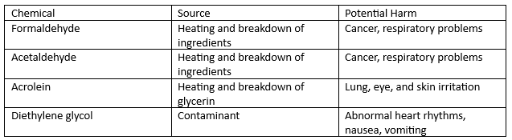
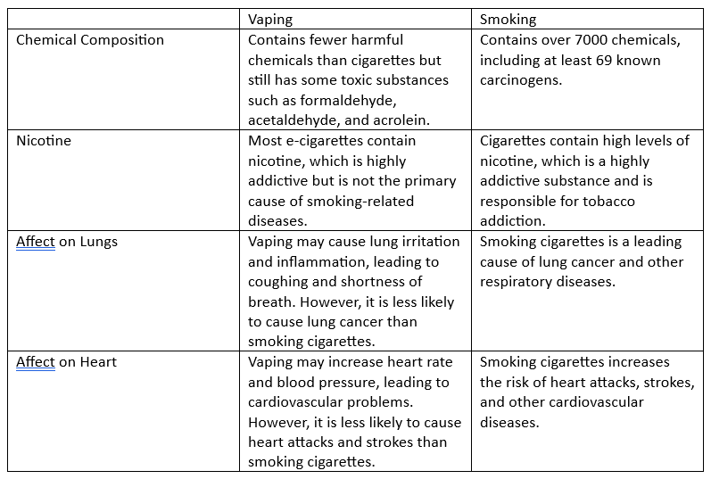
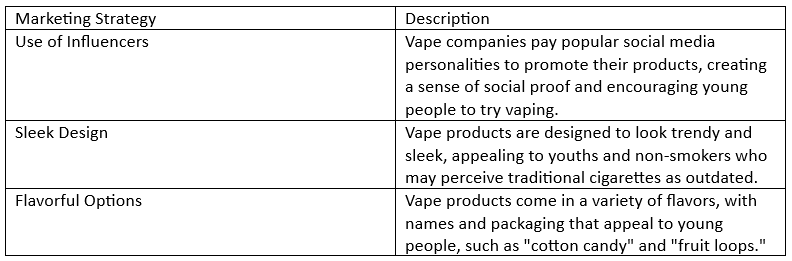

In this article we will tackle on the importance of choosing a vape-free life. As both students and the generation that have been exposed to vaping the most, we are committed to sharing information that empowers individuals to make informed decisions about their health and well-being. In this article, we explore the risks associated with vaping and highlight the need to say no to vape.
The popularity of vaping has skyrocketed in recent years, especially among young people. While some argue that vaping is a safer alternative to traditional smoking, there is growing evidence to suggest otherwise. The potential harm to the respiratory system, cardiovascular health, and overall well-being cannot be ignored.
As students, it is our duty to shed light on the risks associated with vaping and provide guidance on how individuals can break free from vape addiction. We believe in advocating for vape-free policies in schools, public spaces, and workplaces to protect the health and well-being of all individuals, especially vulnerable populations such as children and pregnant women.
Understanding the Risks of Vaping
At first glance, vaping may seem like a healthier alternative to smoking traditional cigarettes.
Unfortunately, this is not the case. Vaping poses numerous risks to our respiratory system, cardiovascular health,
and overall well-being. The first and most significant risk of vaping is its potential harm to the respiratory system.
Vaping devices, or e-cigarettes, work by heating a liquid that typically contains nicotine, flavorings, and other chemicals.
When the liquid is heated, it turns into an aerosol that is inhaled into the lungs. This aerosol contains harmful chemicals and
particles that can cause inflammation, lung damage, and even lung cancer in the long run. Another risk of vaping is its impact
on cardiovascular health. Nicotine, one of the most addictive substances found in vape products, can increase blood pressure
and heart rate, leading to an increased risk of heart disease and stroke. In addition to nicotine, the chemicals found in vape
liquids can also affect the cardiovascular system, causing damage to blood vessels and increasing the risk of heart attack.
Aside from the physical risks, vaping can also have negative effects on our mental health,
specifically our addiction and dependency on vape products. Due to the addictive nature of nicotine,
individuals who use vape products regularly can develop a dependence on them, making it challenging to
quit and break free from the cycle of addiction. "Vaping poses numerous risks to our respiratory system,
cardiovascular health, and overall well-being." While still a relatively new practice, scientific evidence
has already begun to reveal the potential dangers of vaping. As such, it is crucial to be aware of these risks
to make an informed decision about our health and well-being. Our health is our most valuable asset, and we must
prioritize it above all else. Say no to vape and choose a vape-free life for a healthier tomorrow.
Vaping and Youth: A Growing Concern
As we have previously mentioned, vaping among young people has become a significant problem.
It is a growing concern for parents, educators, and healthcare professionals alike. According to a recent
study, more than 5 million American youths use e-cigarettes. This statistic is alarming because it means
that nearly one in four high school students has tried vaping. What's more concerning is that this number
is on the rise. The reason for the popularity of vaping among adolescents is multifactorial. Peer influence,
advertising, a misconception that vaping is safer than smoking, and availability are all contributing factors.
Research shows that the use of e-cigarettes can harm brain development, leading to learning and attention problems.
Vaping can also lead to nicotine addiction, which can cause mood disorders, difficulty concentrating, and even depression.
It is essential to educate young people about the risks of vaping and discourage them from using e-cigarettes. Parents
should talk to their children about the dangers of vaping and stay informed about the latest trends and products available.
Moreover, schools and communities must take action to prevent young people from using e-cigarettes. They should enact
policies that restrict the sale and use of e-cigarettes on school grounds and public places.
We urge you to join us in raising awareness about the risks of vaping and
protecting the health and well-being of our youth.
The Chemical Composition of Vape Products
At the heart of the vaping debate is the chemical composition of vape products.
While many people believe that vaping is a safe alternative to smoking, the reality is that
vape products contain a variety of harmful substances that can be damaging to your health.
The most common ingredients found in vape products include nicotine, propylene glycol, and vegetable glycerin.
Nicotine is highly addictive and can have lasting effects on brain development, particularly
in young people. Propylene glycol and vegetable glycerin are used as solvents and can cause respiratory
irritation and inflammation when inhaled.

In addition to these ingredients, vape products can also contain
heavy metals such as lead and nickel, which can be toxic when inhaled.
The heating and breakdown of ingredients can also produce harmful chemicals
such as formaldehyde and acetaldehyde, both of which are known carcinogens.
It's important to be aware of the potential dangers of inhaling these chemicals
and the long-term health implications of vaping. While studies are ongoing,
it's clear that vape products are not a safe alternative to smoking traditional
cigarettes.
As the popularity of vaping continues to rise, it's important to make informed
decisions about our health and well-being. By understanding the chemical composition
of vape products, we can better assess the risks and make choices that promote a
healthier future.
Vape vs. Smoking: Is Vaping a Safer Alternative?
One of the most significant debates surrounding vaping is whether
it is a safer alternative to smoking traditional cigarettes. Proponents
of vaping argue that it eliminates many of the harmful substances found
in tobacco smoke, such as tar and carbon monoxide. However, opponents
contend that vaping still poses risks and may have long-term health effects
that are not yet fully understood.

Based on the available evidence, it appears that vaping may be a safer alternative to smoking cigarettes.
However, it is important to note that any form of nicotine use is highly addictive and has potential health risks.
Furthermore, the long-term effects of vaping are not yet fully understood.
"Although vaping may be a safer alternative to smoking cigarettes,
any form of nicotine use is highly addictive and has potential health risks."
Vape Marketing: Targeting the Vulnerable
In this section, we shed light on the unethical practices employed in vape marketing, specifically targeting
vulnerable populations such as youths and non-smokers.
"Vape companies use sleek designs, enticing flavors, and social media influencers to lure in young people
and non-smokers, painting a false image of vaping as safe and trendy."
These marketing tactics are concerning, as they contribute to the normalization of vaping
and increase the likelihood of young people and non-smokers trying it. In fact, according to a study by the
Centers for Disease Control and Prevention (CDC), over 80% of young people who use e-cigarettes state that the
appealing flavors were a significant factor in their decision to try vaping.

As students, it is our responsibility to raise awareness of these harmful marketing practices
and pressure vape companies to prioritize the health and well-being of consumers, rather than
profits. We encourage readers to remain vigilant and critical of vape marketing,
and to advocate for stricter regulations to protect vulnerable populations from the harmful
effects of these tactics.
Conclusion
As we conclude our article, we hope that we have successfully conveyed the importance of
choosing a vape-free life for a healthier tomorrow. We understand that making this decision
can be challenging, especially for those who are addicted to vaping. However, the risks
associated with vaping are real, and it is vital to be aware of them to make an informed
choice. Throughout this article, we have explored the risks of vaping, the impact it has
on youth, the chemical composition of vape products, and the potential dangers of secondhand
vape exposure. We have also highlighted the unethical marketing practices employed by the vape
industry and the importance of advocating for vape-free policies in public spaces.
By saying no to vape, we are not only protecting ourselves but also those around us, especially
vulnerable populations. We encourage you to join us in this fight against vaping and to choose a
healthier future for yourself and your community. Let us come together and take a firm stand against
vaping. Together, we can build a brighter and healthier tomorrow for generations to come.